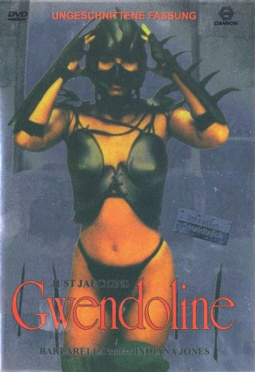

#7142 Gwendoline
Alternativ: The Perils of Gwendoline in the Land of the Yik Yak (Englischer Titel)
 
 IMDB-Wertung: 5.2 / 10
IMDB-Wertung: 5.2 / 10  Metascore: 0
Metascore: 0 
Als die Klosterschülerin Gwendoline erfährt, das Ihr Vater, ein Naturwissenschaftler und Forscher, bei der Suche nach einem seltenen Schmetterling verschollen ist, reist sie mit ihrer Freundin Beth nach Asien. Dort treffen die beiden auf den Abenteurer Willard, der sich den Mädchen anschließt. Gemeinsam machen sie sich auf eine ungewisse Reise und geraten dabei immer tiefer in eine Verkettung voller sexuellen – und sadistischer Ausschweifungen...
Jahr: 1984
Dauer: 100 Minuten
FSK: 18
Land: Frankreich Studio: Belga FilmsTonspuren:
Untertitel:
Auflösung: SD (640x272) Größe: 699 MB
Genre: Abenteuer, Fantasy
Regisseur: Just Jaeckin
Drehbuch: Just Jaeckin
Soundtrack:
Darsteller:
- Tawny Kitaen als Gwendoline
- Brent Huff als Willard
 Zabou Breitman als Beth
Zabou Breitman als Beth- Bernadette Lafont als The Queen
 Vernon Dobtcheff als
Vernon Dobtcheff als - Jean Rougerie als D'Arcy
- Roland Amstutz als
- Stanley Kapoul als
- Chen Chang Ching als
- André Julien als Tom
- Takashi Kawahara als
- Kristopher Kum als
- Loi Lam Duc als
- Maurice Lamy als
- Jim Adhi Limas als
- Georges Lycan als
- Dominique Marcas als
- Roger Paschy als
- Hua Quach als
- Patricia Attwood als
- Marie-Françoise Aupecle als
- Nathalie Belanger als
- Catherine Bartoli als
- Desirée Bergh als
- Martine Blondeaux als
- Cathy Brasseur als
- Arline Burks Gant als
- Aurelie Crasson als
- Mathilde Chapelle als
- Isabel Boncan Clemente als
- Valérie Deschamps als
- Marie-Laure De Beausacq als
- Isabelle Chaudieu als
- Joyce Davoren als
- Catherine Drapier als
- Caline De Chatellus als
- Pascale Epry als
- Laurence Fabre als
- Maranha Fernandez als
- Catherine Ferrare als
- Luzia Fuji als
- Christine Galard als
- Christiane Gangloff als
- Maryse Gauthier als
- Yasmine Gerault als
- Frédérique Givaudan als
- Sylvie Hammouda als
- Évelyne Henz als
- Suthany Houl als
- Nathalie Judelle als
Datei: X:\FSK18-1900-1999\Gwendoline (1984, FSK18, 640x272).avi seit 29.09.2017
Festplatte: FSK18
 Es gibt insgesamt 108 Filme in der Gruppe 'FSK18-1900-1999'
Es gibt insgesamt 108 Filme in der Gruppe 'FSK18-1900-1999'